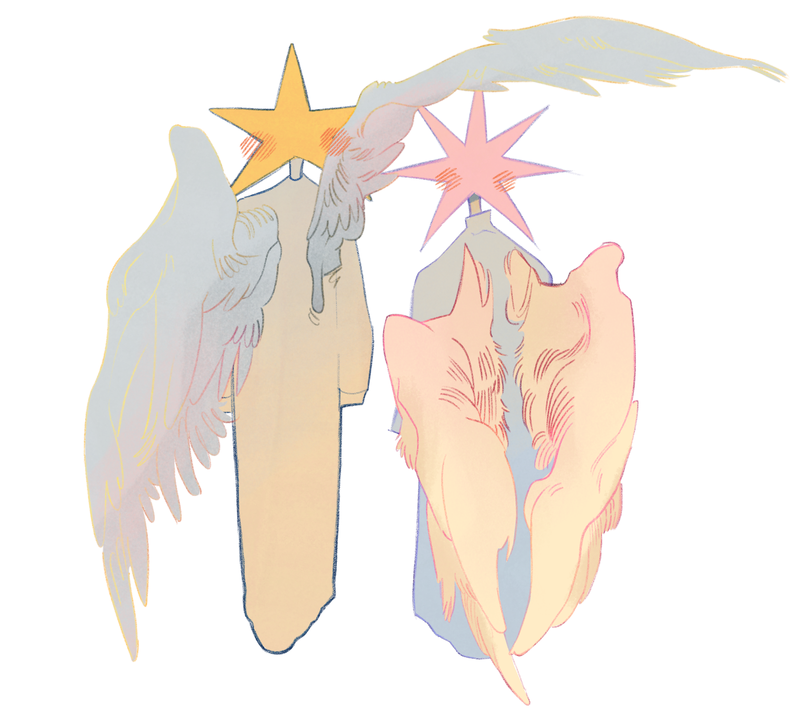
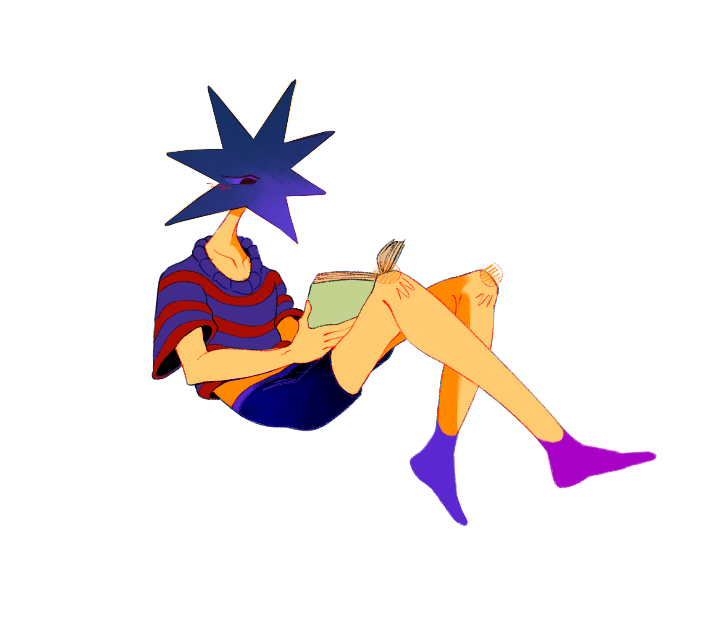

Unbunt
Hast du Vorbilder?
Fangen hier deine Gedanken an, sich zu drehen?
Drehst du dich mit Ihnen?
Sind die Farben ruhig, schreit die Dunkelheit.
Wirst du bis zum Morgengrauen aushalten?
Hell
Heller
Am hellsten
Kannst du dich verstellen?
Verstecken...
Musst du dich verstecken?
Stehst du noch im Dunkeln?
Oder wird dein Schatten immer länger?
Schnell
Schneller
Am schnellsten
Wie lange wird es dauern,
Bis das Licht durch den ersten Riss scheint?
Wirst du es fangen?
Doch Lichtgeschwindigkeit entrinnt deinen Händen.
Bis du im Morgengrauen erstrahlst.
Flutet die Welt
...
Lichtes Gelb
Wird abgelichtet
Ausgeblichen
Hinreißend hingerissen
Aussagekräftig
Denn so ist Gelb nunmal
Es scheint nicht bloß auf uns herab
Es lebt in unseren Körpern
Es spricht zu uns
Aus uns
Sei doch mal bunt!
Siehst du das Himmelblau?
Nein?
Aber es ist doch genau vor dir.
Genau hier.
Bring es hervor.
Die Kunst des Schreibens. Oder Denkens.
Ich weiß nicht alles nichts
ist
irgendwie
ganz
blau- Es verschwindet in der Tiefe der Perspektivee.
Aber es geht nie ganz
verloren.
Erkalten
Ergrauen
Vergehen
Verblauen
Dahingerafft...
In den Hintergrund gerückt.
In einer bewusssten Entscheidung.
Wirst du selbst in deinen dunkelsten Tönen
verbleiben. Dein Abbild wird unter dem gleißenden Licht
verweilen.
Nicht denken!
Kannst du dir denken,
Was ich gedacht habe?
Als ich noch dachte
Doch ich werde nie vergessen-
Solange ich denken kann-
Solange ich dich sehen kann-
Selbst deine hellsten Schatten werfen
den Schimmer einer Erinnerung
auf uns.
Verblauung
residieren
Wie gleißendes Licht
Ein Moment der Unendlichkeit
Flüchtige Gefühle
Wallen über mich hinweg
Wie ein Windhauch
Die Sonne in deinen Augen
Taucht die See in ein tiefes Purpur
Wenn die Sonne untergeht
Und in deine Pupillen versinkt
In der goldenen Stunde
Abendrot, doch rot ist tot.
Abendrot, doch rot ist tot.
Der Mond ist wunderschön, nicht wahr?